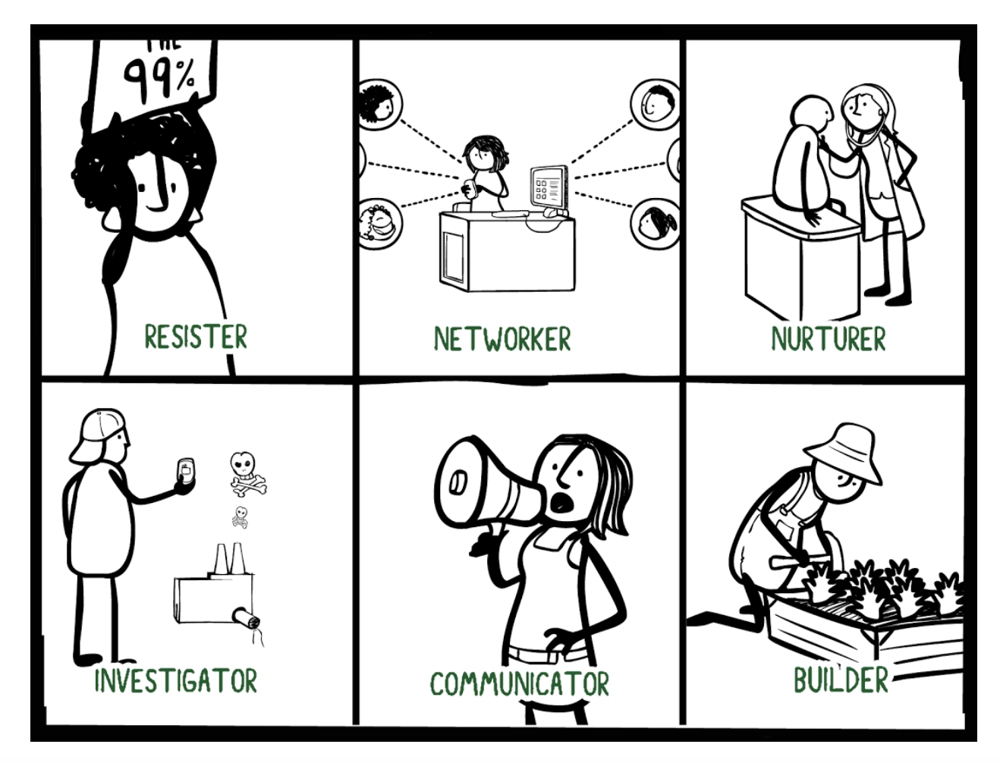

What Type of Changemaker Are You?
Everybody notices problems, experiences school differently, and responds to challenges in their own way.
- Some people ask lots of questions.
- Some jump into action.
- Some bring people together.
- Some notice when things feel unfair.
- Some focus on helping people feel supported.
This quiz is designed to help you think about the different ways people approach change, problem-solving, and understanding experiences.
There are no “good” or “bad” changemaker types, and most people are a mix of several approaches.
As you take the quiz, try not to overthink your answers. Just choose the response that feels most natural to you.
You probably:
Some ways you create change:
Inquiry Process Strengths: